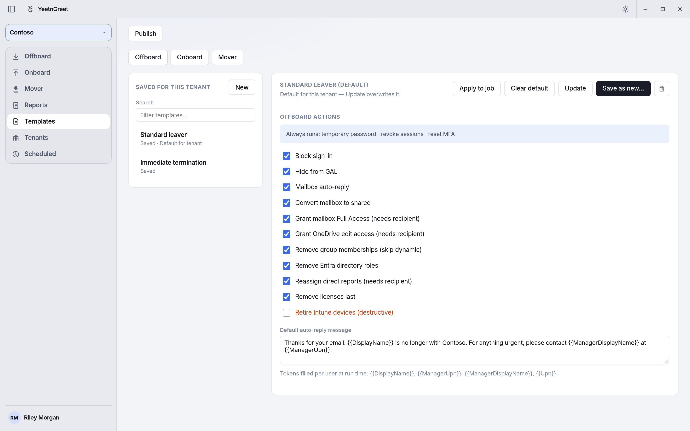
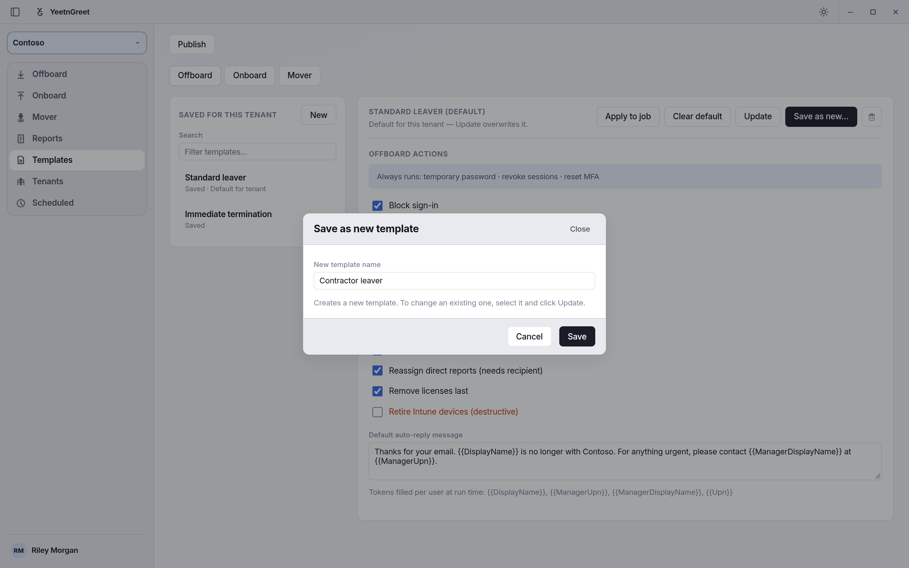
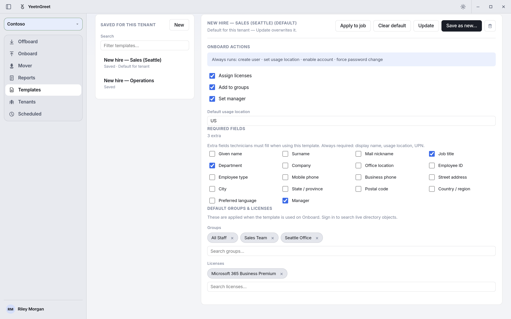
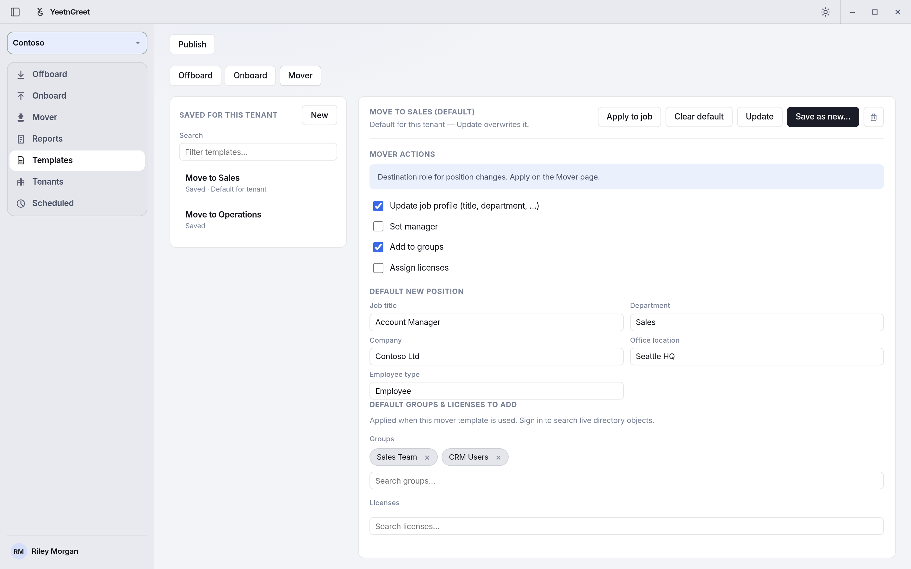

Templates¶
A template is a saved set of job settings for one tenant. You pick it on Offboard, Onboard, or Mover, click Apply, and the job uses those settings. Templates keep every technician on the same checklist for that tenant.
There are three kinds:
| Kind | What it sets |
|---|---|
| Offboard | Which offboard actions run, plus the default auto-reply message |
| Onboard | Optional onboard steps, default usage location, extra required fields, default groups and licenses |
| Mover | Mover steps, the default new position (job title, department, company, office, employee type), and groups and licenses to add |
Templates belong to the tenant selected in the left rail. A template you save for Contoso doesn't show up for Fabrikam.
Who can edit templates
Admins create, edit, delete, and publish templates and set defaults. Techs can open a template to review it and apply it to a job, but they can't change it. On a Tech's job page the template's actions, groups, and licenses are locked, and the Tech fills in who the job is for. See The Tech template lock.
Before you start¶
- Select the tenant in the left rail.
- Sign in to the tenant on Tenants if you want to search live groups and licenses for an onboard or mover template. Actions and text fields work without signing in.
- On a paid plan, sign in to your YeetnGreet profile from the account menu so you can publish templates for the rest of your team.
Create an offboard template¶
- Open Templates and click Offboard.
- Click New. The editor resets to the default actions.
- Tick the actions this tenant's leavers should get. These always run and can't be turned off: temporary password, revoke sessions, and reset MFA.
- Write the Default auto-reply message. You can use these tokens, which are filled in for each person at run time:
{{DisplayName}},{{ManagerUpn}},{{ManagerDisplayName}},{{Upn}}. - Click Save as new…, type a name, and click Save.

An offboard template: tick the actions, write the auto-reply, then save.
Save as new always creates a new template. To change one, select it and click Update.Offboard actions you can turn on or off:
| Action | On by default |
|---|---|
| Block sign-in | Yes |
| Hide from GAL | Yes |
| Mailbox auto-reply | Yes |
| Convert mailbox to shared | Yes |
| Grant mailbox Full Access (needs recipient) | Yes |
| Grant OneDrive edit access (needs recipient) | Yes |
| Remove group memberships (skip dynamic) | Yes |
| Remove Entra directory roles | Yes |
| Reassign direct reports (needs recipient) | Yes |
| Remove licenses last | Yes |
| Retire Intune devices (destructive) | No |
Actions marked "needs recipient" only run when the technician picks a handoff recipient on the Offboard page. Retire Intune devices also needs admin consent in the tenant. See Admin permissions.
Create an onboard template¶
- Open Templates and click Onboard, then New.
- Choose the optional steps: Assign licenses, Add to groups, Set manager. These always run: create user, set usage location, enable account, and force a password change at next sign-in.
- Set the Default usage location (two letters, for example
US). - Under Required fields, tick any extra fields the technician must fill in. Display name, usage location, and UPN are always required. Ticking Manager also turns on Set manager.
- Under Default groups & licenses, search for and add the groups and licenses every new hire should get.
- Click Save as new…, name it (for example "New hire — Sales"), and click Save.

An onboard template with three required fields, three default groups, and one license.Create a mover template¶
Mover templates describe the person's new role.
- Open Templates and click Mover, then New.
- Choose the steps: Update job profile, Set manager, Add to groups, Assign licenses.
- Fill in the Default new position fields you want preset.
- Add the groups and licenses the new role needs.
- Click Save as new… and name it.
Use a template on a job¶
- Open Offboard, Onboard, or Mover.
- In Template, pick the template and click Apply.
- Add the people and finish the job as usual. On Offboard, the Actions list is read-only and shows what the template turns on.
You can also select a template on Templates and click Apply to job. That opens the matching job page with the template applied.
When the label reads Template (required), you have to apply a template before Preview and Run unlock.
Change or delete a template¶
| To | Do this |
|---|---|
| Change it | Select it, edit, click Update, and confirm. This overwrites the saved template. |
| Copy it | Select it, edit, click Save as new…, and give it a new name. |
| Delete it | Select it and click the trash icon, then Remove. |
Set a default for the tenant¶
Select a template and click Set as default. The list then shows Default for tenant under its name, and jobs for that tenant start with it selected. Click Clear default to remove it.
Each tenant has its own default for each kind: one offboard, one onboard, and one mover template. Setting a mover default doesn't change the onboard default. When you're signed in to your YeetnGreet profile as an admin, the default is also shared with your techs.

A mover default. Mover jobs for Contoso start with Move to Sales selected.Publish a template to your team¶
A saved template lives on the PC where you saved it. To share it with your techs:
- Sign in to your YeetnGreet profile as an admin.
- Select the saved template.
- Click Publish at the top of the page.
Techs' PCs pull published templates and the tenant's default when they sign in to their YeetnGreet profile, and again when they open Tenants or Templates if the last pull is old. To pull immediately, they can open Settings → Profile → Refresh company catalog.
Publishing copies the template's settings to your YeetnGreet account: the actions, the auto-reply text, and the names and IDs of the groups and licenses in it. It doesn't copy any user data. Publish needs a paid plan.
Examples¶
| Template | Kind | Settings |
|---|---|---|
| Standard leaver | Offboard | Every action except Retire Intune devices. Auto-reply points to the manager. |
| Immediate termination | Offboard | Same actions, but no auto-reply. |
| New hire — Sales | Onboard | Business Premium, groups "All Staff" and "Sales Team". Job title, department, and manager required. |
| Move to Sales | Mover | Update the job profile to Account Manager in Sales, and add the Sales Team and CRM Users groups. |
Gotchas¶
- Names are unique per kind and tenant. Saving a new template with a name that's already used fails. Use Update to change the existing one.
- Templates are per tenant. Recreate or publish a template for each tenant that needs it.
- Edit actions on Templates, not on the job page. The Offboard Actions list only shows what the applied template does.
- Publish after you change a template. Your techs keep the last published version until you publish again.
- Update overwrites the template right away. There's no version history, so copy it with Save as new… first if you might want the old settings back.